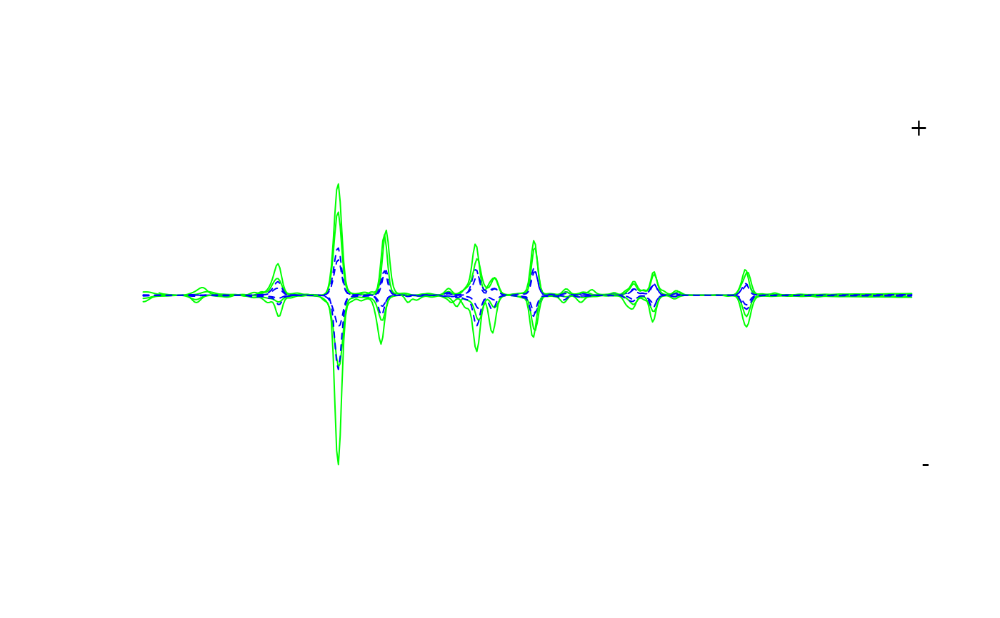

Plots chromatograms as a mirror plot.
Usage
mirror_plot(
x,
chrom_list,
lambdas = NULL,
var,
subset = NULL,
print_legend = TRUE,
legend_txt = NULL,
legend_pos = "topright",
legend_size = 1,
mirror = TRUE,
xlim = NULL,
ylim = NULL,
...
)Arguments
- x
The peak table (output from
get_peaktablefunction).- chrom_list
A list of chromatograms in matrix format (timepoints x wavelengths). If no argument is provided here, the function will try to find the
chrom_listobject used to create thepeak_table.- lambdas
The wavelength you wish to plot the traces at.
- var
Variable to index chromatograms.
- subset
Character vector specifying levels to use (if more than 2 levels are present in
var).- print_legend
Logical. Whether to print legend. Defaults to
TRUE.- legend_txt
Character vector containing labels for legend.
- legend_pos
Legend position.
- legend_size
Legend size (
cexargument). Default is 1.- mirror
Logical. Whether to plot as mirror or stacked plots. Defaults to
TRUE.- xlim
Numerical vector specifying limits for x axis.
- ylim
Numerical vector specifying limits for y axis.
- ...
Additional arguments to
matplotfunction.
Details
Can be used to confirm the identity of a peak or check that a particular column in the peak table represents a single compound. Can also be used to create simple box-plots to examine the distribution of a peak with respect to variables defined in sample metadata.
Side effects
If mirror_plot is TRUE, plots a mirror plot comparing two treatments
defined by var and subset (if more than two factors are present
in var).
Otherwise, if mirror_plot is FALSE, the treatments are plotted in two
separate panes.
See also
Other visualization functions:
boxplot.peak_table(),
plot.peak_list(),
plot.peak_table(),
plot_all_spectra(),
plot_chroms(),
plot_chroms_heatmap(),
plot_spectrum(),
scan_chrom()
Examples
data(Sa_warp)
data(pk_tab)
path <- system.file("extdata", "Sa_metadata.csv", package = "chromatographR")
meta <- read.csv(path)
pk_tab <- attach_metadata(peak_table = pk_tab, metadata = meta, column="vial")
mirror_plot(pk_tab,lambdas = c("210","260"), var = "trt", mirror = TRUE,
col = c("green","blue"))
